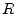

Wire inductors, so called bond wire connections, are used to connect active and passive circuit components as well as micro devices to the real world.
The freespace inductance  of a wire of diameter and length
of a wire of diameter and length  is given [46,47] by
is given [46,47] by
| (11.235) |
where the frequency-dependent correction factor  is a function of
bond wire diameter and its material skin depth is expressed
as
is a function of
bond wire diameter and its material skin depth is expressed
as
| (11.236) |
| (11.237) |
where is the conductivity of the wire material. When is small, . The wire resistance  is given by
| (11.238) |
with and .
The effect of the ground plane on the inductance valueof a wire has
also been considered. If the wire is at a distance  above the
ground plane, it sees its image at from it. The wire and its
image result in a mutual inductance. Since the image wire carries a
current opposite to the current flow in the bond wire, the effective
inductance of the bond wire becomes
above the
ground plane, it sees its image at from it. The wire and its
image result in a mutual inductance. Since the image wire carries a
current opposite to the current flow in the bond wire, the effective
inductance of the bond wire becomes
| (11.239) |
Mirror is a strange model that is frequency independent. Whereas computations are valid, hypothesis are arguable. Indeed, they did the assumption that the ground plane is perfect that is really a zero order model in the high frequency domain.